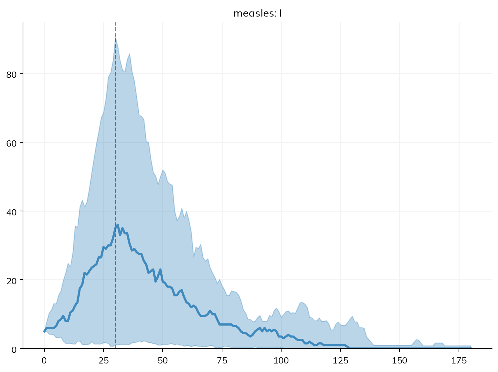

import starsim as ss
S, I, R = ss.states('S I R')
beta = ss.par(0.3, bounds=[0.1, 0.5])
sir = ss.Disease(infection=S >> I @ beta*I, recovery=I >> R @ ss.days(10), init_n=dict(I=100), name='sir')
pars = dict(total_pop=1_000_000, start='2026-01-01', stop='2026-12-31', dt=ss.days(1), solver='ode', verbose=0)Speed and scale
Most Starsim models run fast with no help: a compartmental model of a year in daily steps reruns in under a millisecond, and agents take time in proportion to the number of agents and steps. The first half of this page covers what makes a run slow and what to do about it; the second, running many sims from a script, on a large computer, on a cluster, or behind a dashboard. How the solvers and backends work is in Solvers and backends, and making and comparing many sims in Scenarios.
A compartmental run in one call
A compartmental run is fastest when the compiled kernels can take every step in one call, with nothing in Python between the steps. Anything that needs Python at each step takes the run a step at a time, which for a small model can be 30 to 100 times slower (the ratio depends on the model and the computer). The plan line of sim.describe() says whether a run is taken in one call, and if not, why (a run says so too, as it starts):
masks = ss.modify(sir.pars.beta, multiply=0.75, who=sir.I.n >= 20_000) # Fewer contacts while prevalence is high
late = ss.modify(sir.pars.beta, multiply=0.75, who=sir.I.n >= 20_000, until=sir.I.n <= 10_000) # As above, ending at a lower level
for mod in [masks, late]:
plan = [line for line in ss.Sim(sir, interventions=mod, **pars).describe().splitlines() if 'plan' in line]
print(plan[0].strip())plan sir: as compiled code, the whole run in one call
plan sir: as compiled code, one step at a time, since late has a step of its own (a modifier with until=, which remembers whether it is on)The first runs in one call: a condition on a count is worked out within the kernels as part of the rate. The second needs to remember whether the measure is on, so it is taken a step at a time. To be told rather than slowed, give the sim require_kernels=True: a run that would fall back to Python then raises ss.CapabilityError, with the reason.
sim = ss.Sim(sir, interventions=masks, require_kernels=True, **pars).run() # Fine: the whole run is in the kernelsWhat stays in the kernels, and what does not:
| In the kernels | A step at a time |
|---|---|
Parameters that vary in time (ss.timeseries, ss.seasonal) |
A parameter that is a function of the sim (lambda sim: ...), called at each step |
ss.modify() with when= (a window, ss.schedule(start=, stop=), other times, or a function of the date), who= on a stratum (or on a state, for a transition), or who= comparing the module’s counts (I.n >= 1000) |
ss.modify() with until=, a function as its amount, who= as a function of the sim, or who= on incidence over a period (infection.incidence(over=ss.days(7))) |
Deliveries such as ss.vaccinate() at fixed times or on a schedule, including coverage given as a rate (ss.peryear(0.5)) |
Deliveries with who= on a count, and ss.treat() |
| Outcomes, including those with a delay | Triggers (ss.on(...)) |
Births and deaths declared with ss.birth() and ss.death() |
Interventions, analyzers, or connectors written as code with a step() of their own |
verbose=0 or 1 |
verbose=2, until= in sim.run(), sim.profile(kind='loop'), and diagnostics |
A module written as code is always taken a step at a time, since its step() is Python. If it only needs to act at a few times, or on a condition that one of the declared forms above can say, writing it that way keeps the run in the kernels.
Many runs
Running the same model many times is fastest with ss.parallel(): with n_runs=, pars=, or priors=, a sim that runs in one call is built once, and all its runs are taken together by the kernels. A loop that builds each sim again, such as [sim.new(rand_seed=i).run() for i in range(100)], rebuilds the model each time, which takes about 10 milliseconds, many times the run itself.
msim = ss.parallel(ss.Sim(sir, **pars), pars=dict(beta=[0.2, 0.3, 0.4]), n_runs=10, workers=1) # 30 runs, taken togetherFor the same reason, rerun a sim with sim.run() again (or sim.restart(pars=...).run() for new values) rather than sim.new(), unless the model itself has changed. Fitting does this already.
Substeps, JAX, and compiling
substeps=1 (in ss.solvers.ode() or ss.solvers.binomial()) takes each step whole, which is faster but less accurate when rates are fast compared with the step. On a CPU, a small model is faster in the kernels than in JAX; JAX gains on large models and on many runs at once. If a first run after installing is slow, the Numba kernels are being compiled, which ss.compile() does once ahead of time. All three are covered in Solvers and backends.
Agents and code of your own
An agent-based run takes time in proportion to the number of agents and the number of steps. For speed:
- Use fewer agents than people.
total_pop=with a smallern_agents=lets each agent stand for several people (see Branching and rescaling). - Use compartments if nothing needs individuals. If a model needs no network, no per-person values, and no histories,
solver='ode'or a stochastic compartmental solver is far faster at any population size. - Threads. The passes over the agents of a large sim (more than about 200,000 agents) use several threads;
ss.options.threadssets how many (see On a cluster for running many sims at once). - Common random numbers.
ss.options.crn = Falsegives faster draws, at the cost of runs no longer matching across scenarios agent for agent (see Random numbers).
Code of your own
A module written as code runs its step() in Python, once a step, and Starsim then stays out of the way (though such a run can’t be taken in one call to the kernels, run in JAX, or differentiated). What decides its speed is how it handles the people:
- Work on arrays, not people. A loop over the agents in Python is many times slower than the same work on the whole array at once (see Array indexing).
- Compile a loop that can’t be written as array operations.
@ss.jitcompiles a function with Numba, keeps it on disk between sessions, and says why if it can’t (see Custom modules); called with JAX arrays, it is traced by JAX instead, so it can be differentiated. Numba’s own@nb.njitworks as well, and either works whether Starsim’s own kernels are Rust or Numba. - Draw random numbers from Starsim’s distributions (
ss.bernoulli,ss.normal, and the others) rather thannp.random, so that runs stay reproducible and scenarios share their random numbers (see Random numbers); their draws are compiled already.
As a rough guide from one test (a module that updates a value for each of 50,000 agents, on one computer), a loop in Python made the whole run about seven times slower, while the same loop with @ss.jit, or NumPy on the whole array, made it 15–40% slower; time your own model before and after.
To find where the time goes, sim.profile(kind='loop') records how long each part of each step takes, and sim.profile() how long each line of a function takes (Profiling and debugging). Profiling takes the run a step at a time, so use it to find the slow part, not to time the run; sim.elapsed gives the seconds of the last run.
From a notebook to a script
An analysis that will be run again (by you next month, by a colleague, or on another computer) is best kept as a script rather than a notebook: inputs explicit, the model made by a function, and the results saved with what is needed to make them again. A script that runs sims in parallel puts the work under if __name__ == '__main__':, so that the worker processes, which import the script, don’t start the analysis again (this is required on Windows and macOS):
# measles_campaign.py
import sciris as sc
import starsim as ss
def make_sim(coverage=0.5, seed=1):
""" The measles model, with a campaign on day 30 """
S, I, R = ss.states('S I R')
beta = ss.par(1.9)
infection = S >> I @ beta*I
recovery = I >> R @ ss.days(8)
measles = ss.Disease(infection, recovery, init=dict(R=0.9), init_n=dict(I=5))
campaign = ss.vaccinate(efficacy=0.95, when=ss.days(30), coverage=coverage)
return ss.Sim(measles, interventions=campaign, total_pop=20_000, stop=ss.days(180),
solver='binomial', rand_seed=seed, label=f'Coverage {coverage}', verbose=0)
if __name__ == '__main__':
sims = [make_sim(coverage) for coverage in [0, 0.25, 0.5, 0.75]]
msim = ss.parallel(sims, n_runs=100)
msim.to_df(quantiles=[0.025, 0.5, 0.975]).to_csv('measles_campaign.csv', index=False) # The results, as quantiles over the runs
sc.savejson('measles_campaign_info.json', dict( # What is needed to make them again
starsim = ss.__version__,
git = sc.gitinfo(__file__),
date = sc.getdate(),
))Keep the computation and the presentation apart: a script (or a cluster job) saves tables, and a notebook makes the figures from them. Record the versions of Starsim and of your own code, the data, the seeds, and the parameter values; a saved table with these stays reproducible long after a saved sim (a pickle) has stopped loading. Check one run and one small batch before a large one.
On one large computer
The simplest way to run more is a larger computer, such as a cloud virtual machine with many cores. ss.parallel() already runs sims on all the cores of the computer it is on, so a script that uses it needs no changes. Here, the measles model is run for ten values of β, ten times each:
import numpy as np
import sciris as sc
import starsim as ss
S, I, R = ss.states('S I R')
infection = S >> I @ 1.9*I # β = 1.9 per day
recovery = I >> R @ ss.days(8) # Infectious for 8 days on average
measles = ss.Disease(infection, recovery, init=dict(R=0.9), init_n=dict(I=5)) # 90% immune, 5 infectious
sim = ss.Sim(measles, total_pop=20_000, stop=ss.days(180), solver='binomial', verbose=0)
msim = ss.parallel(sim, pars=dict(beta=np.linspace(1.5, 2.3, 10)), n_runs=10)
msim.summarize().loc['measles_infection']| median | low | high | mean | std | |
|---|---|---|---|---|---|
| scenario | |||||
| beta=1.5 | 351 | 8.35 | 843 | 351 | 320 |
| beta=1.58889 | 491 | 10.1 | 973 | 479 | 348 |
| beta=1.67778 | 837 | 36.3 | 1,095 | 728 | 360 |
| beta=1.76667 | 1,004 | 40.9 | 1,205 | 860 | 402 |
| beta=1.85556 | 1,120 | 216 | 1,285 | 1,025 | 353 |
| beta=1.94444 | 1,204 | 250 | 1,362 | 1,112 | 375 |
| beta=2.03333 | 1,294 | 1,181 | 1,438 | 1,319 | 83.9 |
| beta=2.12222 | 1,360 | 1,253 | 1,501 | 1,389 | 79.8 |
| beta=2.21111 | 1,418 | 1,323 | 1,548 | 1,444 | 70.5 |
| beta=2.3 | 1,485 | 1,378 | 1,592 | 1,497 | 65.5 |
workers= limits the number of cores used (for a shared computer), and workers=1 runs the sims one after another in this process, which gives an error its full traceback. When the sims differ in more than parameter values, make them with a function (see Running sims) and give the list to ss.parallel(). If making each sim is itself slow (reading large data files, or building a large population), make them in parallel too, with sc.parallelize() from Sciris:
def make_sim(seed, coverage):
campaign = ss.vaccinate(efficacy=0.95, when=ss.days(30), coverage=coverage)
return ss.Sim(measles, interventions=campaign, total_pop=20_000, stop=ss.days(180), solver='binomial', rand_seed=seed, label='Campaign', verbose=0)
sims = sc.parallelize(make_sim, iterarg=range(1, 9), coverage=0.5) # One sim for each seed, 1 to 8
msim = ss.parallel(sims)
msim.plot('measles.I')
Making sims in parallel copies each one back to the main process, which takes time for a large sim; sc.parallelize(..., serial=True) makes them one after another, to check whether parallel is faster. A remote computer can be used through SSH, from an editor that connects to a remote Python (such as VS Code or Positron), or with a Jupyter server on it (The Littlest JupyterHub).
Starsim sets NumPy’s linear algebra library (BLAS) to one thread when imported; for large matrix calculations of your own, ss.options.blas_threads gives it more (see the appendix).
On a cluster
With Dask
For more runs than one computer can manage, tools such as Dask spread them across many computers. Each task makes and runs a sim and returns it; sim.shrink() first removes the people, so that only the results are sent back. ss.MultiSim() then collects sims that have already run, without running them again. (This and the next example are not run on this page.)
import dask
import dask.distributed as dd
import numpy as np
import starsim as ss
def run_sim(seed, beta):
""" Make and run one sim, and return it without its people """
S, I, R = ss.states('S I R')
infection = S >> I @ beta*I
recovery = I >> R @ ss.days(8)
measles = ss.Disease(infection, recovery, init=dict(R=0.9), init_n=dict(I=5))
sim = ss.Sim(measles, total_pop=20_000, stop=ss.days(180), solver='binomial', rand_seed=seed, label=f'beta={beta}', verbose=0)
sim.run()
sim.shrink()
return sim
if __name__ == '__main__':
client = dd.Client(n_workers=4)
tasks = [dask.delayed(run_sim)(seed, beta) for seed in range(1, 11) for beta in [1.5, 1.9, 2.3]]
sims = list(dask.compute(*tasks))
msim = ss.MultiSim(sims) # Collects the results of sims that have run
msim.plot()Coiled, a paid service built on Dask, runs the same tasks on a cloud cluster that grows and shrinks with the work (coiled.Cluster(n_workers=50).get_client() in place of dd.Client()), and the same pattern works with other tools, such as Joblib.
With a job scheduler
On a high-performance cluster run by a scheduler such as Slurm, the usual pattern is a job array: the same script is run many times, each with its own task number, which picks the seed and the scenario. Each job saves its sim (shrunk) or, better, a table of the results it needs, and a final script collects them:
# run_one.py: run as one task of a job array, e.g. with sbatch --array=0-399
import os
import starsim as ss
from measles_campaign import make_sim
task = int(os.environ['SLURM_ARRAY_TASK_ID'])
coverages = [0, 0.25, 0.5, 0.75]
coverage, seed = coverages[task % 4], task // 4 + 1 # 100 seeds of each of 4 scenarios
sim = make_sim(coverage=coverage, seed=seed)
sim.run()
sim.save(f'results/sim_{task}.sim') # Shrunk by default, since it has finished# collect.py: once every task has finished
import glob
import starsim as ss
sims = [ss.load(filename) for filename in sorted(glob.glob('results/sim_*.sim'))]
msim = ss.MultiSim(sims) # Collects sims that have already run; sims with the same label are runs of one scenario
msim.summarize()Some things matter more on a cluster than on a laptop:
- One level of parallelism. When the scheduler already runs many tasks at once, don’t have each task start a pool of its own: use
ss.parallel(..., workers=1)within a task, or limit it withworkers=. Starsim’s own threads (used only for passes over 200,000 agents or more, and never in the workers ofss.parallel()) are turned off withSTARSIM_THREADS=1, and NumPy’s withSCIRIS_NUM_THREADS=1in the task’s environment. - Compile once, before the runs. With the Numba kernels, run
starsim init compile(orss.compile()) once after installing, in the shared environment or when building a container image, so that hundreds of tasks don’t each compile them;starsim init compile --checksays whether it has been done. - Settings from the environment. Every option in
ss.optionscan be set by an environment variable (STARSIM_THREADS=1,STARSIM_VERBOSE=0), the easiest way to set it for every task of a job (see the appendix). - The same code everywhere. Install the same versions of Starsim and of your own modules on every node (a container image, or a shared environment): sims are sent between computers as Python pickles, which need the same code to load.
- A seed for each run. Give each run its own
rand_seed, or every run of a stochastic model is the same.
Interactive dashboards
A model can be put behind a web page, so that others can change its inputs and see the results, with tools such as Shiny for Python, Voilà, Panel, or Streamlit. This Streamlit app has sliders for the fraction of the town that is immune and the coverage of a vaccination campaign:
import streamlit as st
import starsim as ss
def run_sim(immune, coverage):
S, I, R = ss.states('S I R')
infection = S >> I @ 1.9*I
recovery = I >> R @ ss.days(8)
measles = ss.Disease(infection, recovery, init=dict(R=immune), init_n=dict(I=5))
campaign = ss.vaccinate(efficacy=0.95, when=ss.days(30), coverage=coverage)
sim = ss.Sim(measles, interventions=campaign, total_pop=20_000, stop=ss.days(180), verbose=0)
sim.run()
return sim
st.title('Measles in a town of 20,000')
immune = st.slider('Fraction immune at the start', 0.5, 0.99, 0.9)
coverage = st.slider('Coverage of the campaign on day 30', 0.0, 1.0, 0.5)
sim = run_sim(immune, coverage)
st.write('Infections:', round(sim.results.measles.infection.sum()))
st.pyplot(sim.diseases.measles.plot())Saved as app.py, it runs (after pip install streamlit) with streamlit run app.py, which opens the dashboard in a browser.
Further reading
- Covasim: Deployment: Dask, Coiled, and dashboards for Starsim’s predecessor
- Dask: Delayed: turning a function that makes and runs a sim into a task for a cluster
- Slurm: Job arrays: running the same script many times with a task number
- Streamlit: Get started: building a dashboard around a model
- Sciris: Parallelization:
sc.parallelize(), whichss.parallel()is built on
Appendix: every option
Starsim’s global options are in ss.options: set one for the session with ss.options(threads=1), for a block with with ss.options(threads=1):, or before Python starts with the environment variable STARSIM_ and the option’s name in capitals (STARSIM_THREADS=1), which is the way to set it for every worker or every task of a cluster job. ss.options.disp() shows the current values, and ss.options.help(detailed=True) each option’s value, default, and variable. Here is each option with its description:
import pandas as pd
pd.set_option('display.max_colwidth', None) # Show each entry in full
rows = {key: dict(variable=f'STARSIM_{key.upper()}', description=ss.options.optdesc[key]) for key in ss.options.keys()}
pd.DataFrame.from_dict(rows, orient='index')| variable | description | |
|---|---|---|
| verbose | STARSIM_VERBOSE | How much a sim prints by default: 0 for nothing (e.g. in a batch of runs or a fit), 1 for the solver chosen, notes, and progress (default), 2 for everything, such as each step (for debugging). A sim's own verbose= overrides it. |
| warnings | STARSIM_WARNINGS | What to do with a warning: "warn" (default) to show it as a Python warning, "print" to print it as plain text, "error" to raise it as an error (useful in tests, or to find where a warning comes from), or "ignore" to drop it. |
| max_steps | STARSIM_MAX_STEPS | Warn that a sim may be slow if it has more timesteps than this (0 to never warn); the default is more than a century at a daily step. |
| max_years | STARSIM_MAX_YEARS | Warn that a run is probably a mistake if it lasts longer than this many years (0 to never warn); a run this long is almost always a stop meant as a year, or a time in the wrong unit. |
| jupyter | STARSIM_JUPYTER | Whether to use the settings for Jupyter notebooks (sharper "retina" figures): -1 to detect a notebook (default), 0 for never, 1 for always. |
| style | STARSIM_STYLE | The plotting style: "starsim" (default), "fancy", "simple", or any of Matplotlib's styles. To change it for one plot only, use ss.style() in a with block. |
| show | STARSIM_SHOW | Whether plots are shown as soon as they are made (with plt.show()); set False to make figures without showing them, e.g. in a script that saves them to files. |
| reticulate | STARSIM_RETICULATE | Whether a NumPy integer array indexes a state by UIDs, as needed for a module written in R (through reticulate), which cannot keep ss.uids; leave False in Python. |
| precision | STARSIM_PRECISION | The precision of the numbers kept for each agent: 32 (default) for float32, which takes half the memory, or 64 for float64, for when small differences matter (e.g. comparing against another model to many decimal places). |
| threads | STARSIM_THREADS | The number of threads that the passes over the agents of a large sim, and the particles of a particle filter, use: 0 (default) for as many as Numba has (by default, one per core), or 1 for no extra threads, e.g. on a shared machine. Each worker of ss.parallel() and of a calibration uses one, since the workers already share the cores. |
| blas_threads | STARSIM_BLAS_THREADS | The number of threads for BLAS, the linear algebra in NumPy and SciPy: 1 (default), since more threads rarely speed up a sim but do slow down many sims run in parallel; or 0 to leave BLAS as it is. For the threads of Starsim itself, see "threads"; see also the "Deployment" page of the user guide. |
| kernels | STARSIM_KERNELS | Which compiled code runs the solvers (all give the same results):\n\n- "auto" (default): Rust if it is there (in the wheels, or built: see starsim/solvers/rust/README.md); otherwise Numba, running compartmental sims in plain Python until Numba has compiled (Numba compiles first if a run, or the runs of a session, would take longer in plain Python than compiling takes, about two minutes, once per install; a note says which)\n- "rust": Rust, compiled ahead of time, so a first run takes no compiling\n- "numba": always compile with Numba first (see ss.compile())\n- "python": the compartmental kernels in plain Python (the passes over agents are still Numba), e.g. for debugging\n\nJAX is chosen by the run (see sim.jax), and ss.jit always uses Numba. |
| jax | STARSIM_JAX | Where JAX runs when Starsim uses it (sim.gradient(), fits, and ODE runs with sim.jax = True): "cpu" (default), "auto" for JAX's own choice (a GPU if it finds one), or another platform, e.g. "cuda". The CPU is the default since Starsim's runs in JAX are long loops of small steps, which a GPU runs several times slower. It sets JAX_PLATFORMS, so it applies to everything in the session that uses JAX; if JAX has already started on other platforms, it is restarted on these the next time Starsim uses it (and "auto" goes back to the platforms it had before). |
| uncompiled_warning | STARSIM_UNCOMPILED_WARNING | Whether to say on import that Starsim has not been compiled yet (see ss.compile()); True by default. Since it is read on import, it only has an effect as the environment variable STARSIM_UNCOMPILED_WARNING. |
| crn | STARSIM_CRN | Whether to use common random numbers (default True): each agent gets the same random numbers in every scenario, so the difference between two scenarios is due to what changed rather than to chance. Set False for slightly faster draws (one plain random number per agent or edge), which are statistically valid but differ between scenarios. |
| keep_times | STARSIM_KEEP_TIMES | Whether a declared disease run as agents keeps the time each agent entered every state (e.g. ti_S) and the history of every transition (e.g. sir.infection.n_times, .since, and .ever). Off by default to save memory: only those that the engine or the model needs are kept (with, for each, the time each agent last left the state, e.g. for I.stays), and reading another raises an error. ss.Sim(keep_times=...) sets it for one sim. |
| max_joint | STARSIM_MAX_JOINT | The most compartments that diseases tracked jointly in a compartmental run may use (their joint states times the groups of the other dimensions; see ss.solvers.JointStates). Above it, solver="auto" runs as agents instead, and a compartmental solver that was asked for raises an error before anything is made, since so many compartments would take too much memory. 0 for no limit. |
Starsim also reads SCIRIS_NUM_THREADS for the threads of linear algebra, and STARSIM_CHECK_COUNTS and STARSIM_CHECK_DRAWS, which turn on checks of the agent engine for testing it, at a cost in speed. The settings of a sim that affect speed or memory (n_agents, dt, solver, require_kernels, group_results, record_people) are in Running sims.
Appendix: the starsim command
Installing Starsim also installs a starsim command, for setting up an environment and converting models (starsim lists these, and starsim <command> --help the options of each):
| Command | What it does |
|---|---|
starsim init |
Once, after installing: starsim init ai if an AI coding agent is installed, then starsim init compile unless the Rust kernels are in use (-y not to ask) |
starsim init compile |
Compiles the Numba kernels ahead of time, as ss.compile() does (a few minutes, once per install); optional, since they are otherwise compiled on first use. --rust builds the Rust kernels instead, in a clone of Starsim; --check says which kernels are in use and whether they are compiled, exiting with 1 if not |
starsim init ai |
Links the Starsim skills for AI coding agents into this project, as starsim ai install does; --global installs a short skill for all projects, --to=claude,agents chooses the agents, and --force replaces a skill of the same name |
starsim init dev |
For a clone of Starsim: also the development dependencies, Rust if it is missing, and both sets of kernels |
starsim ai |
Where the skills are installed; list, show (the guide, or one skill), install and uninstall, and off and on (whether other commands suggest the skills) |
starsim convert model.R |
Converts a model to Starsim code (model.py), telling the format from the file (or --from=); --to= another format, --out= the file, --force to replace it. starsim convert lists the formats |
starsim convert laser_model.py --ai |
Has an AI coding agent do the conversion, with Starsim’s skills (--headless to run it on its own; --ai=claude names the agent, by default the one in STARSIM_AGENT or the only one installed) |
starsim import model.camdl |
The same as starsim convert model.camdl --to=starsim; a second argument gives the format (starsim import model.json epipack), and other options go to the importer (--databook=data.xlsx) |
starsim export model.py sbml |
Writes the sim that model.py makes (as sim, or --sim=) in another format |
starsim --version |
The version of Starsim |